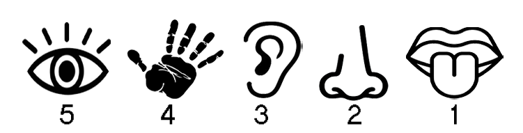
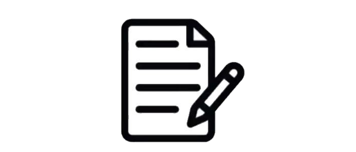
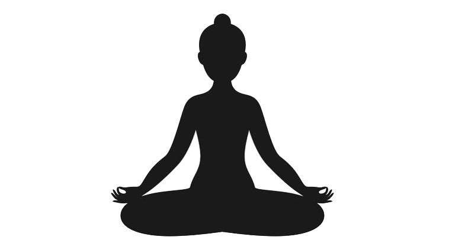

यह वेबसाइट महिलाओं की सुरक्षा सुनिश्चित करने के लिए विभिन्न सेवाएं प्रदान करती है।
आप इस पृष्ठ के नीचे दिए गए प्रोफ़ाइल आइकन पर क्लिक करके अपनी उपयोगकर्ता प्रोफ़ाइल देख और अपडेट कर सकते हैं।
खुद को सुरक्षित रखने के लिए निम्नलिखित टिप्स और सावधानियाँ अपनाएँ:
अपने आस-पास की स्थिति से अवगत रहें।
सार्वजनिक स्थानों पर हेडफ़ोन या इयरबड्स का उपयोग न करें।
अच्छी रोशनी और भीड़-भाड़ वाले रास्तों का उपयोग करें।
अपनी व्यक्तिगत जानकारी साझा करने में सतर्क रहें।
सुरक्षा उपकरण जैसे मिर्च स्प्रे, छोटी चाकू रखें।
अपना फोन पूरी तरह से चार्ज रखें और हमेशा सुलभ रखें।
रात में अकेले चलने या यात्रा करने से बचें।
अपने आपातकालीन संपर्क दर्ज करें:
तनावपूर्ण परिस्थितियों में अपने मन को शांत करने
के लिए विश्राम अभ्यास का पालन करें।
कदम 1- 4 सेकंड तक श्वास लें।
कदम 2- 4 सेकंड तक श्वास रोकें।
कदम 3- 4 सेकंड तक धीरे-धीरे श्वास छोड़ें।
फिर 4 सेकंड तक श्वास रोकें।
इसे 4-5 बार दोहराएँ।
---क्यों: यह पैरेसिंपैथेटिक नर्वस सिस्टम को सक्रिय करता है (जिसे शांति की मोड कहा जाता है)।

कदम 1- 5 चीजें जो आप देख सकते हैं, बताएं
कदम 2- 4 चीजें जो आप छू सकते हैं, बताएं
कदम 3- 3 चीजें जो आप सुन सकते हैं, बताएं
कदम 4- 2 चीजें जो आप सूंघ सकते हैं, बताएं
कदम 5- 1 चीज जो आप स्वाद ले सकते हैं, बताएं
---क्यों: यह आपको वर्तमान क्षण में लाता है।

कदम 1- 5-10 मिनट के लिए टाइमर सेट करें।
कदम 2- जो भी मन में आए उसे बिना किसी फिल्टर या संरचना के लिखें।
---क्यों: मानसिक अव्यवस्था को साफ करने में मदद करता है और अधिक सोच को कम करता है।

कदम 1- अपनी आँखें बंद करें और एक शांतिपूर्ण स्थान (समुद्र, जंगल, पहाड़) की कल्पना करें।
कदम 2- अपनी इंद्रियों को सक्रिय करें: आप क्या देखते हैं? सुनते हैं? सूंघते हैं?
समय: 5 मिनट।
---क्यों: मस्तिष्क चित्रण को लगभग वास्तविक अनुभवों की तरह प्रतिक्रिया करता है—मानसिक पलायन के लिए आदर्श।
कदम 1- एक मोमबत्ती जलाएं और इसे आँखों के स्तर पर, लगभग 2-3 फीट दूर रखें।
कदम 2- सीधे बैठें और आराम से मोमबत्ती की लौ को देखें।
कदम 3- जब आपकी आँखें थक जाएं, तो उन्हें बंद करें और लौ की कल्पना करें।
इसे 5-10 मिनट तक दोहराएं।
---क्यों: यह मन को शांत करता है, ध्यान में मदद करता है, और मानसिक शोर को कम करता है।